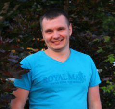

Руденко Антон Олексійович
Currents:
- Game Design
- User Experience
- Creation and improvement of the game balance
- Application maps
- Creating games scripts and levels
- Icon Design
- Mobile Games
- Сharacter creation
- Collection and analysis of Business Intelligence
- Vorking Software (WinWord, Excel, PowerPoint, MS-Office, мережі Internet, Photoshop, JIRA).
Курсы:
- Quality Assurance (курсы проходили три месяца, окончены в 01.06.2015 году )
- Unity
Особисті якості:
Добре володію презентаційними та комунікативними навичками, збором, систематизацією та аналізом інформації. Вмію
працювати в умовах дедлайнів та розставляти пріоритети. Порядність, чесність, організованість, пунктуальність,
відповідальність, креативність. Вміння працювати як в команді, так і самостійно. Спроможність до саморозвитку та
засвоєння інформації.
Досвід роботи:
| 31.12.2015 – 31.12.2017: |
Company WIN Interactive
Project: MobNsters
Position: Game Designer |
| 01.06.2014 – 31.12.2015: |
Company WIN Interactive
Project: Echoes of the past Wolf Healer
Position: Game Designer |
| 01.06.2013 – 01.06.2014: |
Company WIN Interactive
Project: Secrets of the dark The flower of Shadow
Position: Junior Game Designer |
| 01.06.2012 – 01.06.2013: |
Kirovohrad State Taxation Department
Position: VAT Department inspector |
| 01.09.2011 – 01.06.2012: |
Professional School No 9
Position: Senior Expert |
| 14.10.2008 – 01.07.2011: |
LLC ‘Victoria Feliz’
Position: System Administrator |
Освіта:
| 2001 - 2006 рр.: |
Кіровоградський державний педагогічний
університет імені Володимира Винниченка
Факультет: природничо-географічний
Спеціальність: Педагогіка і методика середньої
освіти. Хімія.
Спеціалізація: Біологія, основи екології та безпеки життєдіяльності
Професійні права: вчитель хімії, біології, основ екології та безпеки життєдіяльності основної і старшої
школи
|
| 2007 – 2009 рр. : |
Кіровоградський національний технічний
університет
Факультет: заочної та дистанційної освіти
Спеціаліст за спеціальністю "Фінанси"
|